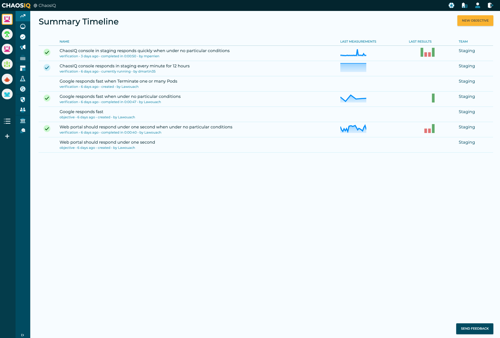

Timeline
The Reliability Timeline is one of the key features of the Reliability Toolkit. The work with the Reliability Toolkit is centred on Timelines. The timeline view can give you a quick overview of the reliability of your system. We believe the Timeline can be the first port of call for the overall status of your system. From the Summary Timeline, you can drill down into more detail as required if you need to investigate events that have impacted the reliability your systems.
Summary Timeline
The Summary Timeline will give you a historical view of events that have occurred in your system. This includes the experiments and verifications that have been run with the Chaos Toolkit when it's signed in to your Reliability Toolkit account:

The Summary Timeline shows an Icon for the event, followed by a Name for the event. If applicable further information is included under the name, that provides some more details on the event. For example, if the event is a verification it will show when it was run, for how long and by who. The name is also a hyperlink to a detail view for the event, if it is a verification it will take you to the insight view for the verification:

If the event entry on the Summary Timeline is a verification, it will also show the last measurements for the verification as a time series graphic. If you hover over the graphic it will display the point value measurement.
The next column, if the event is a verification will show the results of the last 5 executions. This is displayed as a bar graph graphic and indicates if the verification impacted on the error budget for an Objective. A red bar if the verification impacted the error budget, otherwise it is green.
For the details of both these graphics see the verification insight view.
Finally, the Summary Timeline shows the team that generated the event.
The Icons displayed on the Summary Timeline could be one of:
| Icon | Meaning |
|---|---|
 |
Experiment |
| Objective | |
| Verification is running | |
 |
Verification ended Impacting |
 |
Verification ended Not Impacting |